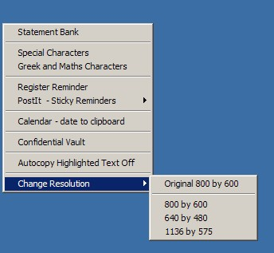

Change Resolution
For those times when you end up working on a different computer, and the resolution settings prevent your resources from being displayed correctly.
Most schools have security settings that prevent individuals from changing the settings, unfortunately, this also stops you from accessing the screen resolution settings.
The Teacher Toolkit will check to see what settings are available, and allow you to alter the screen resolution settings:

Notice, the Teacher Toolkit keeps a record of the original settings (the top setting listed) so you can return the settings before leaving.